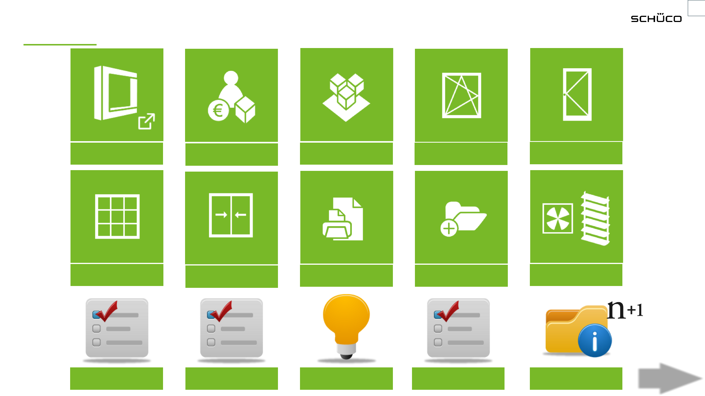

Learning SchüCal
Video Tutorials
18
th
October 2021, by Schueco Singapore Pte Ltd
Title slide
Slide layout: Title with picture
When you delete the example
image, the “insert image from file”
button appears, with which you can
import a new image.
Alternatively, you can click on the
image frame and insert an image
copied to the clipboard into the
frame by using the “Paste” function.
The image is automatically
adjusted to fit the image frame. The
section can be changed by using
the “Cut” command.
This image can be used as the
cover image for further
presentations or replaced by an
image of your choice. However, the
position of the image is always the
same.
X
X

Contents
Page with text
Slide layout: Title and 2 contents
Optional subheadings are coloured
green.
Click the respective tab to go directly to the relevant section …
X
X
NEXT
NEXT
Quick Start
General Data
Article Management
Windows / Window
door
Doors
Façade
Sliding Units
Output Advanced Features
Sun Shading /
Ventilation
Good to Knowfrom Experts - 01 from Experts - 02 from Experts - 03
updating in progress...
2
Learning SchüCal for Beginner
Learning SchüCal3
Contents
Slide layout: TOC (grey)
01- Create Project
02- Create project glass
03- Creating Window
04- Add and edit material
05- Field properties, Edit opening
06- Creating Door
07- Additional labour costs &
Calculation
00- About SchüCal by Matthes Hoof
Quick Start (from Schueco LMS)
Click the respective tab to play relevant video with full screen …
18.10.2021
X
X
08- Creating Façade with insert unit
09- Create quotation
10- Work on quotation
11- Customize reference line
12- Customize texts
NEXT
NEXT
BACK
BACK
Learning SchüCal for Beginner
Learning SchüCal4
Contents
Slide layout: TOC (grey)
13- Company contact
14- Condition system supplier
15- Operating conditions
16- System default settings, Technical settings
17- Pre-rolled profile code
18- Order code
19- Article with packing units
General Data (from Schueco LMS)
Click the respective tab to play relevant video with full screen …
18.10.2021
X
X
20- Concurrent calculation with optimization
21- User settings
22- User profiles
23- Installing GDF for network users
Before start working on SchüCal projects and items, the user will have to define some basic
settings and master data from the “General” tab.
NEXT
NEXT
BACK
BACK

Learning SchüCal5
Contents
Slide layout: TOC (grey)
24- Create User-defined articles 25- Basic for Calculation
26- Create an article group
27- Article times for installation
Article Management (from Schueco LMS)
Click the respective tab to play relevant video with full screen …
18.10.2021
X
X
System articles and article templates are saved in the program as standard. Any additional articles required for the editing of projects and
items can be saved as user-defined articles. User-defined articles are evaluated for their cost. Cutting optimization is carried out for user-
defined articles with a unit quantity (Length [mm]). An automatic item related technical calculation does not occur for user-defined articles.
NEXT
NEXT
BACK
BACK
In article groups you arrange articles that are frequently used in this combination but not generated automatically. Therefore, articles that
are required for customer fabrication of e.g. various types of fixings for façades are not calculated automatically. To obtain a calculation you
must enter these supplementary articles as additional material. In this case, you save a lot of time if you save frequently used variants as
an article group using the article management. When entering the additional material, you then simply select the required article group.
System articles, article templates and user-defined articles can be used in article groups.
Article times for installation applies to system articles, system glass, article templates, user-defined articles and articles in article groups.
For the cost calculation, the assembly labour costs from the operating conditions or the hourly rate from a cost centre can be used. These
times and costs given in the master data are calculated as soon as the article is generated in an item (system article, article templates). If
article groups are entered as additional material, the times which are stored in the article group in the master data are generated for the
articles contained therein. If you delete the article group in the item, the general article times which are set as default in the master data are
copied over for the articles contained within the group specifically for the item. For user-defined articles and system articles, which are
entered as additional material in an item, the article times which are set as default in the master data are copied over for installation
specifically for the item. You can change the data in the item as required.
Learning SchüCal6
Contents
Slide layout: TOC (grey)
28- Create Window with AWS 75 PD.SI
29- Deduction for window vents independent of opening
30- Window door with sprandrel safety barrier
Windows / Window door (from Schueco LMS)
Click the respective tab to play relevant video with full screen …
18.10.2021
X
X
Since SchueCal 2019 you have the possibility to configure the panorama design window system
Schueco AWS 75 PD.SI.
Available opening types:
Turn, Tilt, Turn/tilt and Fixed light
Possible use as insert unit in mullion/transom facades.
The wind load is calculated for the opening types turn, tilt and turn/tilt.
NEXT
NEXT
BACK
BACK
In the technical settings below the group deductions for window vents you can determine when the
deduction dimensions for the width and height are taken into account
Create a window door with spandrel safety barrier (French balcony)
Learning SchüCal7
Contents
Slide layout: TOC (grey)
31- Selection of power pack and connection cable for A-strike
32- ADS 75/90 SimplySmart gasket for threshold
33- Panic door RC 2 with leaver handle
34- Groove cover profiles
35- ADS 75 BL SimplySmart swing door with meeting rail profile
36- Display clear access width
37- ADS 50.NI Swing door meeting rail
Click the respective tab to play relevant video with full screen …
18.10.2021
X
X
NEXT
NEXT
BACK
BACK
Doors (from Schueco LMS)
38- Recess including rebate profile or reverse rebate profile
Learning SchüCal8
Contents
Slide layout: TOC (grey)
39- Façade change T-cleats
40- Façade with profile joint
41- Additional features
Façade (from Schueco LMS)
Click the respective tab to play relevant video with full screen …
18.10.2021
X
X
NEXT
NEXT
BACK
BACK
Reference glass, adapter gaskets and glazing rebate reduction profiles
With the glass thickness of the glass you have load in your item, the alignment for the whole glazing is
given. The reference glass thickness is automatically set as default ( the thickest glass that is used in
your item).
It is possible to overwrite the total thickness (e.g. to connect a fire protection façade to a standard
facade). If you raise the thickness, SchueCal estimates glazing rebate reduction profiles to create the
new alignment for the glazing.
You can change the composition to gaskets (also for insert units) in the technical settings.

Learning SchüCal9
Contents
Slide layout: TOC (grey)
42- Closing assistance for lift/slide items
43- Level treshold and preselection of composite type
44- Opening types and asymmetrical vent sizes
45- Sliding / Lift-and-slide element with TipTronic
46- Door fitting manager – free choice of vent combination
47- Door fittings manager - folding item with standard vent composition
Click the respective tab to play relevant video with full screen …
18.10.2021
X
X
NEXT
NEXT
BACK
BACK
Sliding Units (from Schueco LMS)
Slide and Fold (Door fitting manager)
The fittings for the folding-sliding items can be entered in the dialog of the field properties dialog. The handles for
the folds and if applicable for the turn/tilt vent and side hung vent must not be added in the wizard any more.
Learning SchüCal10
Contents
Slide layout: TOC (grey)
48- Order
49- User-defined list combinations
50- Structual component projected top hung window AWS 114.SI
51- Material list
52- Bulk order list (Bulk Quantity List)
Click the respective tab to play relevant video with full screen …
18.10.2021
X
X
NEXT
NEXT
BACK
BACK
Output (from Schueco LMS)
AWS 114 .SI
Some articles of this system must be assembled before processing and processed as components (vent frame /
outer frame + isolator and support profile).
In all processing relevant lists these articles are summarized as group of components and printed with one
component article number.
Learning SchüCal11
Contents
Slide layout: TOC (grey)
53- Airborne sound insulation
54- Settings
55- Activation
56- Optimization
57- Glass statics
58- Distance between blocks and load combinations
59- Output
Click the respective tab to play relevant video with full screen …
18.10.2021
X
X
60- Conditions for coaters
61- Additional project costs
62- Find projects and positions
63- Articles and output lists
NEXT
NEXT
BACK
BACK
Advanced features (from Schueco LMS)
Preliminary structural calculation
64- Direct into Docu Center
Search and find
Additional project and set-up costs
Learning SchüCal12
Contents
Slide layout: TOC (grey)
65- Schüco VentoLife air purification device
66- Integralmaster sun shading
Click the respective tab to play relevant video with full screen …
18.10.2021
X
X
NEXT
NEXT
BACK
BACK
Sun shading / ventilation (from Schueco LMS)
Integralmaster sun shading
The Integralmaster glare protection and sun shading integrated in the glazing beads can be entered for suitable openings in the
following systems: Schüco AWS 70.HI, Schüco AWS 75.SI+, Schüco AWS 90.SI+, Schüco AWS 90.SI+ Green.
If you have any technical questions about Integralmaster, please contact:
SUN-MASTER Sonnenschutz GmbH
Mr Michael Dumrath or Mr Jürgen Reinisch
Wolfradshof 17
17390 Schmatzin, Germany
Tel.: +49 (0)39724 - 26 80 00
E-mail: info@sunmaster-sonnenschutz.de
As of version 2017, the Schüco VentoLife air purification device can be created. To do this, select the opening type 113: VentoLife
ventilator in the Field properties dialog box.
An insulating panel with a total thickness of 54 mm is automatically generated for use. Details such as the type (externally flush-
fitted or internally flush-fitted), position of the ventilator in the field and, if necessary, regarding contour extension and decorative
unit, can be specified in the Field properties dialog box.
Learn from Experts_01
Learning SchüCal13
Contents
Slide layout: TOC (grey)
02- Downloading Schüco Softwares by Christian Geiler
03- SchüCal System Default Settings by Kai Linnenbruegger
04- Pre-rolled profile code by Kai Linnenbruegger
05- SchüCal Order Code by Kai Linnenbruegger
06- Preliminary Static Calculations by Henrik Andersson
07- Thermal Calculations in SchüCal by Henrik Andersson
08- Batches by Matthes Hoof
09- My Lists by Matthes Hoof
01- New Features of Schücal 2020 R2 by Kai Linnenbruegger
1:12:12
7:25
18:46
6:43
5:21
10:45
9:09
8:41
6:47
Click the respective tab to play relevant video with full screen …
18.10.2021
X
X
NEXT
NEXT
BACK
BACK
Learn from Experts_02
Page with text
Slide layout: Title and 2 contents
Optional subheadings are coloured
green.
18.10.2021 Learning SchüCal14
17- Make SchüCal Faster with Archiving by Christian Geiler
10- Define Unit Appearance in SchüCal by Matthes Hoof
11- Work on Schüco AD UP by Matthes Hoof
12- Unitized façade Schüco AF UDC 80 by Kai Linnenbruegger
13- SchüCal – Work on Facid by Kai Linnenbruegger
14- SchüCal MCO New_Overview by Christian Geiler
15- SchüCal MCO New_Notching by Christian Geiler
16- SchüCal MCO New_Serial Processing by Christian Geiler
18- TropTec Excel Templated to SchüCal by SEI India
Click the respective tab to play relevant video with full screen …
10:18
11:07
34:18
27:15
14:19
11:42
18:47
9:45
11:23
X
X
NEXT
NEXT
BACK
BACK
Some Useful Features of SchüCal
Page with text
Slide layout: Title and 2 contents
Optional subheadings are coloured
green.
18.10.2021 Learning SchüCal15
19- How to key in SchüCal Activation Code for Special Products
20- Adding of ASS 50 Reinforcement from SchüCal Feature
21- Working with Cost Data Block
22- Additional Materials and Article Group with Export Feature
23- Corner Window with AWS 50.NI
24- Using Multiple Viewports and Defining Unit Appearance
25- Basic Preliminary Structural Calculation with SchüCal
26- ADS 65.NI door with Conceal Hinges coupling with Fixed field & Handles fixings
Click the respective tab to play relevant video with full screen …
X
X
NEXT
NEXT
BACK
BACK
Learn from Experts_03
Page with text
Slide layout: Title and 2 contents
Optional subheadings are coloured
green.
18.10.2021 Learning SchüCal16
34- SchüCal – Glazing Options Façade by Kai Linnenbruegger
27- with TipTronic and TipTronic SHEVS by Kai Linnenbruegger
28- SchüCal Setting Optimization by Henrik Andersson
29- SchüCal – Manipulate Optimization by Kai Linnenbruegger
30- SchüCal – Clear Access Width by Kai Linnenbruegger
31- SchüCal – Create Unit From Drawing by Kai Linnenbruegger
32- SchüCal – Door fittings manager by Kai Linnenbruegger
33- SchüCal – Double Glazing Sash Bar by Kai Linnenbruegger
35- SchüCal – Sliding Systems ASE by Kai Linnenbruegger
Click the respective tab to play relevant video with full screen …
17:32
14:47
22:54
05:47
20:31
44:49
13:23
08:59
30:25
X
X
NEXT
NEXT
BACK
BACK
Learn from Experts_04 (updating in progress…)
Page with text
Slide layout: Title and 2 contents
Optional subheadings are coloured
green.
18.10.2021 Learning SchüCal17
36- SchüCal – New Feature 2021 by Kai Linnenbruegger
37- SchüCal – New Feature 2021 R2 by Kai Linnenbruegger
38- Set Status and Markings in SchüCal by Christian Geiler
39- Lock Project and Items in SchüCal by Christian Geiler
Click the respective tab to play relevant video with full screen …
47:04
23:24
03:48
01:51
X
X
NEXT
NEXT
BACK
BACK
40- SchüCal – New Feature 2022 R1 by Kai Linnenbruegger
40:55
41- SchüCal – New Feature 2022 R2 by Kai Linnenbruegger
34:59
42- Schüco Connect – SchüCal Interface by Liv Leibmann
01:38
43- SchüCal – New Feature 2023 R2 by Kai Linnenbruegger
28:56